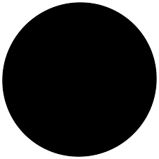
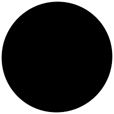

It is an international distinguished graphic design studio. Its aim is to pursue their creativity spectrum in different mediums through developing new innovative design systems and technological platforms that grow with the institutions aswell.
Their approach is to mainly see design as Catalyst, its starting point for projects that can then grown and create new systems that will build up, evolving overtime. Showing the importance of notion of tim for this necessity to truly create something new and outstanding.
Linked by Air Studio sees their work as THE PRODUCTION OF PUBLIC SPACE. The partnership began with Tamara Malefic and Dan Michelson in 2005, located in New York City.
Projects vary mainly from complex projects, being very hands-on work. The studio gives big importance to collaboration and interaction of people- their approach to design is clearly linked to their technological decisions into creating new innovative developments and opportunities, taking their approach to different projects in unique ways.
Their design approach is very interesting as they view it as starting position for projects to grow, this helps them to innovate in the same project through long series of continuing projects. This increases participation when planning the projects, bringing benefits to the studio as it produces continuing build up of brands from the bottom up, helping the brand to really seek their brand identity and perfect it.
Their concepts vary to some extent depending on the work that they are approaching but throughout their work what I can really recall that its very seen on them is, the usage of grid as a base to organise information aswell as images to understand the theme in the best possible matter, the concepts of development through time and the interactivity with users and the use of space which is very important in their work as communication design with the space is very important in their design and technological approach.
 
